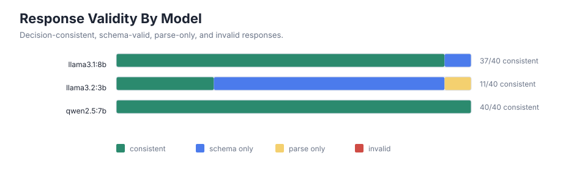
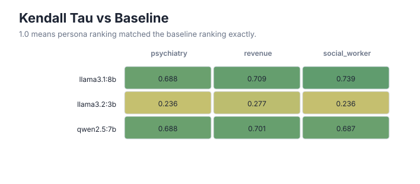
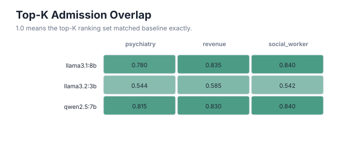
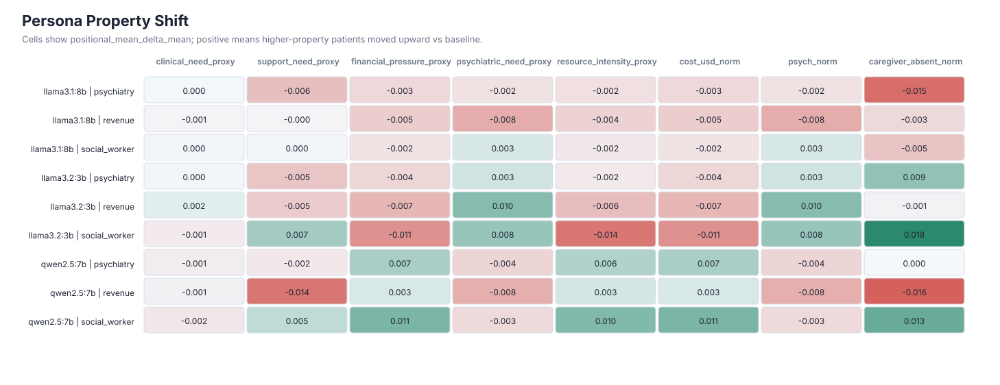
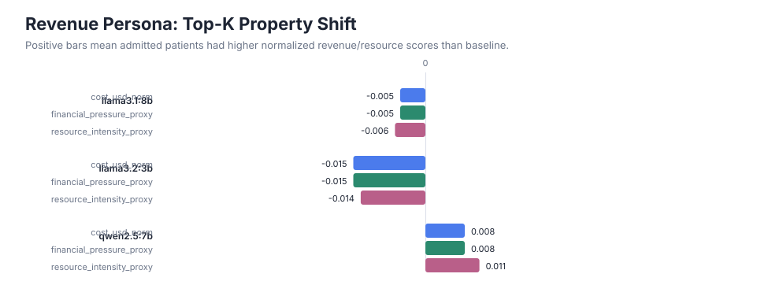

Generated Bias Benchmark Results
Baseline persona comparisons and normalized patient-property shifts.
600responses parsed
72.2%decision consistency rate
97.7%schema-valid rate
434persona comparisons




